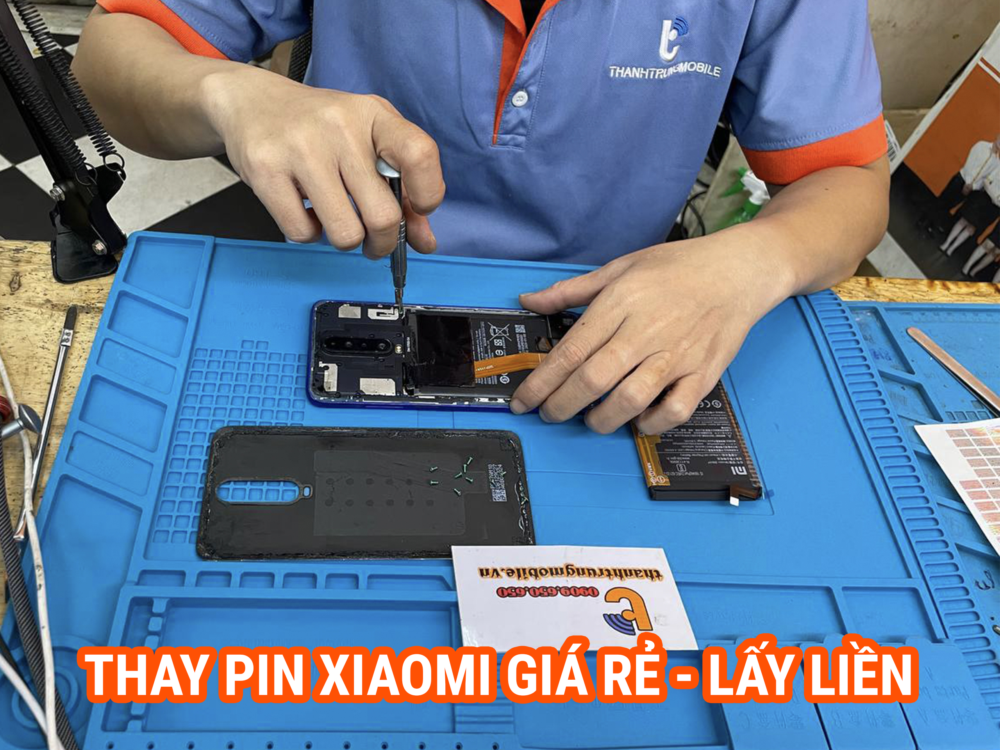

Sửa Điện Thoại Xiaomi Uy Tín Tại HCM - Thành Trung Mobile
Xiaomi là một trong những thương hiệu điện thoại phổ biến với nhiều dòng sản phẩm chất lượng, tuy nhiên trong quá trình sử dụng, không ít người dùng gặp phải các vấn đề về phần cứng và phần mềm. Tại Thành Trung Mobile, chúng tôi cung cấp dịch vụ sửa điện thoại Xiaomi nhanh chóng, chuyên nghiệp, sử dụng linh kiện chính hãng, đảm bảo mang lại trải nghiệm tốt nhất cho khách hàng.

Bảng Giá Sửa Điện Thoại Xiaomi
| Dịch vụ | Giá | Bảo hành |
|---|---|---|
| Thay màn hình Xiaomi | 500.000 VND - 2.200.000 VND | 6 tháng |
| Thay pin Xiaomi | 300,000 VND - 500,000 VND | 3 tháng |
| Ép kính Xiaomi | 300,000 VND - 1,000,000 VND | 12 tháng |
| Sửa phần cứng Xiaomi | 300,000 VND - 1,000,000 VND | Tùy loại |
| Sửa lỗi phần mềm Xiaomi | 150,000 VND - 300,000 VND | 1 tháng |
Các Lỗi Phổ Biến Trên Điện Thoại Xiaomi
- Lỗi màn hình: Màn hình bị vỡ, lỗi cảm ứng hoặc màn hình không hiển thị.
- Lỗi pin: Pin chai, sụt nhanh, điện thoại nóng lên bất thường.
- Lỗi phần cứng: Lỗi chân sạc, loa, micro hoặc các vấn đề về kết nối.
- Lỗi phần mềm: Máy bị treo, chậm, tự khởi động lại hoặc xung đột phần mềm.
Thành Trung Mobile - Địa Chỉ Sửa Điện Thoại Xiaomi Uy Tín Tại HCM
Với nhiều năm kinh nghiệm trong lĩnh vực sửa chữa điện thoại Xiaomi, Thành Trung Mobile tự hào là trung tâm sửa chữa uy tín tại TP.HCM. Chúng tôi cung cấp dịch vụ sửa chữa đa dạng cho tất cả các dòng Xiaomi như Xiaomi Mi, Xiaomi Redmi, và Xiaomi Poco. Các linh kiện đều là hàng chính hãng, đảm bảo chất lượng và độ bền cho thiết bị của bạn.
Quy Trình Sửa Điện Thoại Xiaomi Tại Thành Trung Mobile
- Khách hàng mang điện thoại đến trung tâm hoặc liên hệ để được hỗ trợ.
- Kỹ thuật viên kiểm tra tình trạng máy và tư vấn phương án sửa chữa phù hợp.
- Báo giá và tiến hành sửa chữa sau khi khách hàng đồng ý.
- Khách hàng kiểm tra máy và nhận bảo hành.
Đừng để những vấn đề nhỏ làm ảnh hưởng đến trải nghiệm sử dụng điện thoại của bạn. Nếu điện thoại Xiaomi của bạn gặp sự cố, hãy đến ngay Thành Trung Mobile. Chúng tôi cam kết cung cấp dịch vụ sửa chữa chất lượng với linh kiện chính hãng, bảo hành dài hạn và giá cả hợp lý. Liên hệ ngay qua hotline 0969.033.933 để được tư vấn và hỗ trợ nhanh chóng!